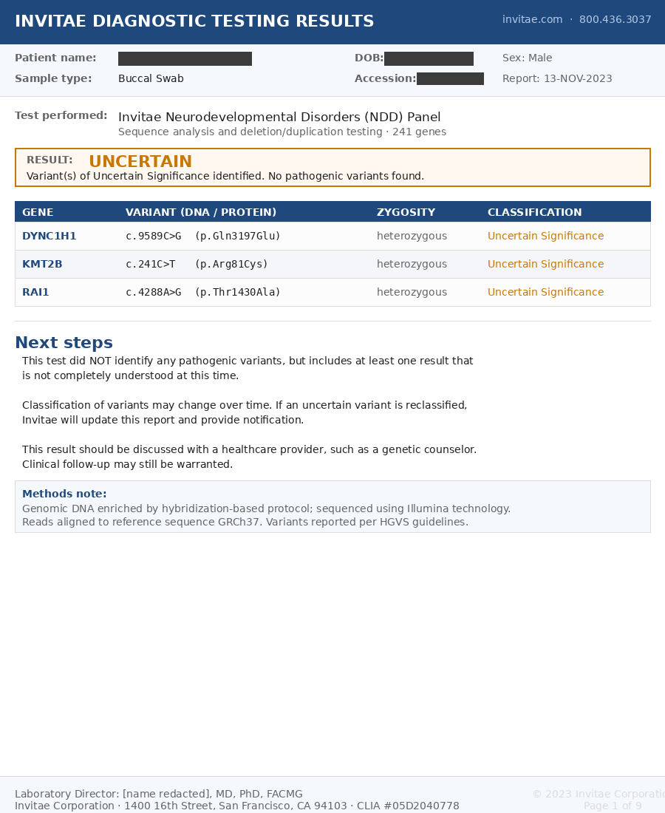
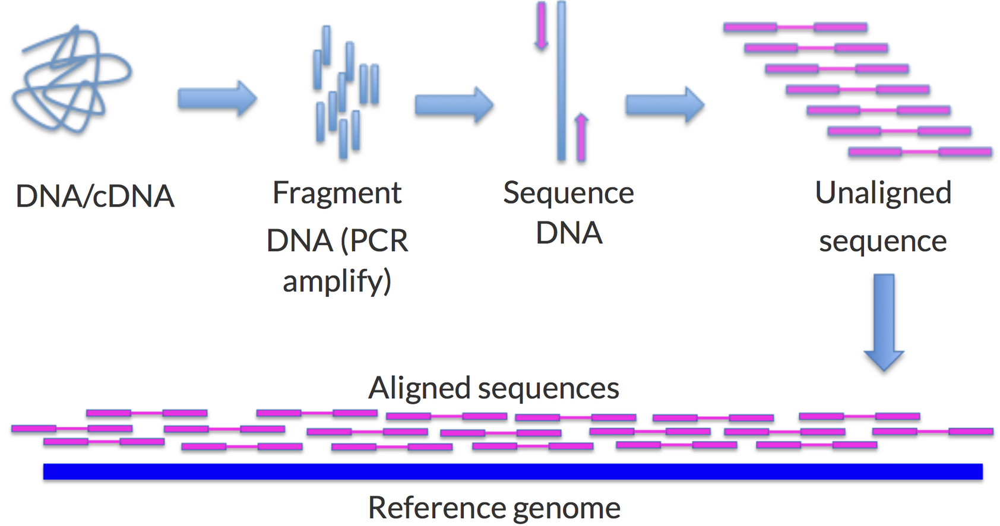

What Your Genome Report Doesn't Say
Consider two genetic reports sitting on your doctor's desk, one from Invitae and one from GeneDx. The first report is for your two-year-old child, evaluated for early markers of developmental delays. You sent a saliva sample to Invitae, one of the largest clinical genomics laboratories in the United States. The lab says it tests 241 genes that are associated with neurodevelopmental disorders. Two weeks later your doctor gets back the report. You see it, and under "Result," it says Uncertain with three findings flagged, each in a notation that looks something like a serial number.

Figure 1. Sample Invitae Neurodevelopmental Disorders Panel report with patient identifiers redacted.1
Your heart drops and the results instantly send your mind into overdrive. It's based on a gene, so why is it uncertain? The one word you remember from your science classes is heterozygous, but you've forgotten that it means the change sits on only one of your child's two copies of the gene. This could have happened through inheritance from either parent or through a new mutation. The rest of the report is a code, and most concerning is that the ambiguity ends with the advice to discuss the results with a healthcare provider.
The second report you requested is a GeneDx cancer panel. While it's a different lab with a different disease target, the report ends up with the same structure, giving you the gene name, a string of letters and numbers for the "variant," a consequence, zygosity, and verdict. You're left with a similar set of questions, though depending on the verdict, the report might alleviate concerns or deliver more.
You talk to your doctor about these letters and learn that this notation, consisting of c., p., the position numbers, and the letter substitutions, is how every major clinical genomics laboratory in the world reports its findings. It has become the standardized shared language for medical genetics so that trained physicians can consistently read the report regardless of the lab running the test. Your genetic counselor, though, tells you that you don't need to worry about those specifics since the test translates them for you and that they're here to answer any questions you may have.
But what exactly is buried in that notation? What, exactly, is a "variant"? More importantly, and more unnervingly, what are you varying from?
What Are You Varying From?
The word "variant" on the report sounds like a neutral, almost bureaucratic liability-avoidance term, but in genetics it is precise, referring to a specific location in your DNA that differs from a reference sequence. The standardized notation is focused on encoding this definition. Let's take the first example from Figure 1 that reads DYNC1H1 c.9589C>G p.Gln3197Glu heterozygous. Breaking it down:
DYNC1H1
- DYNC1H1 is the gene that the variant occurs in.
- Heterozygous means that the two gene copies differ at this position. In this case, one has the expected C and the other has a G. This could have happened through inheritance or through a new mutation.
c.9589C>G
- c. means we are looking at the gene's coding sequence, namely, regions of the genome that may make proteins. Dysfunctional protein production may cause disease. More precisely, it refers to the coding sequence of a particular transcript, since the same gene can be read in more than one way. The report does not identify which transcript was used, so part of the address is left unstated.
- 9589 is the position of the variant in that transcript's coding sequence. If we take the selected reference transcript and start counting from the first coding nucleotide, the variant is at the 9,589th position.
- C>G means at the 9,589th position, the reference expects a C (cytosine), but the patient has a G (guanine). This means the patient is varying from the reference, or, put a different way, they have a variant.
p.Gln3197Glu
- p. means we're looking at the predicted protein-level impact using the protein made from that same transcript.
- Gln is the amino acid (glutamine) that would usually be made from the code the C sits in if the reference sequence were present. It takes three nucleotides (letters) to make an amino acid, but we don't have enough information to know which of those three positions the variant sits in.
- 3197 is the position of the Gln in the protein if the reference sequence were used. This position is relative to the amino acids, so it is roughly 1/3 of the position the coding variant is in.
- Glu is the amino acid (glutamic acid) that is put into the protein at that position as a result of the variant. Since this is a genomic variant that only substitutes the amino acid present in the protein, geneticists call this a missense variant.
Think of what this signifies. This barcode tells the geneticist that a single-letter change, one position out of the roughly three billion that make up a human genome, on one of the gene copies, is different from the reference that was used. It also says that, at this position, the other copy has the same C as the reference.
You might notice that we keep leaning on the word "reference" and wonder if this is just science jargon. But "reference" is actually the key to this, and to most other similar diagnostic reports. Every position in this report, every c. notation, every coordinate, every address, is defined relative to a reference sequence. Even a position that is tested but not reported on is judged by what it was measured as, relative to that reference. Without the reference, the barcode is meaningless and you have to just trust the label. If we think of all the different sequences out there, there is no absolute position c.9589. The position is only known when we pair it with the specific transcript and genome reference used for the report. So the natural question is what this reference is, where it came from, and how it was made.
The Almighty Reference Genome
The reference genome was one of the primary products of the Human Genome Project, the international effort that ran from 1990 to 2003 and produced what was announced, somewhat misleadingly, as "the human genome." In reality, the genome it produced was a representative human genome assembled from DNA donated by a small number of anonymous volunteers. The DNA that was extracted from the volunteers' blood was sequenced in fragments and then stitched into a continuous sequence. This was transformative in the sequencing space, as it gave researchers a map against which a person's sequence could be compared, rapidly accelerating analysis. This map made tasks like finding the cause of simple mutation-driven diseases simpler. Without the reference genome, the last two decades of genomic medicine would not have happened.
But the reference was never meant to scientifically represent THE human genome, or a single universal true genome. Instead, it was meant to be what we described, a practical tool and comparison anchor. As more genomes were sequenced and technology improved, the Genome Reference Consortium has maintained and updated the references, including continuing to advance their latest major version, GRCh38, alongside an earlier version, GRCh37. Despite being built in 2009, GRCh37 is maintained as it still remains widely popular for clinical labs. They have not switched because each revision changes the genomic coordinates that are used to define the numbers in the variant description. Minor updates can be somewhat smoothly handled, but a major shift would require revalidation of the diagnostic pipeline, a time-intensive process. This revalidation is due to the change in how a variant is represented. A variant that lives at one address in GRCh37 lives at a slightly different address in GRCh38. For clinical diagnostic reports that look at sometimes proprietary variants, this means ensuring all the variants are cross-mapped and validated. In addition, any associated analysis pipelines, publications, and documentation need to support the change in the coordinates for the variant. As an example, if you look at public clinical variant repositories such as ClinVar, you can see that they have to maintain separate coordinates for the different references. All this remapping, reanalysis, and republication creates a cognitive load on the field. Keep this in mind for later.
But let's dive deeper into what the GRC human references actually are. Since they came from the donation of several people, it's fair to think that they're either all from a single person or an equal split from the group, but neither is true. GRCh38 is a mosaic drawn from roughly twenty donors, but this obscures the truth that a single volunteer, an anonymous man from Buffalo known in the literature as RP11, accounts for roughly 70% of the sequence by himself.2 The rest is stitched together from the other contributors to fill the gaps. This means that no single person is actually the reference, but, at the same time, the reference is heavily biased toward a single individual.

Figure 2. An overview of genomic alignment showing how DNA is broken into fragments, the fragments are sequenced, and then compared against a reference.11
So when you get your genome sequenced for a test, the reference they use is like one of those we mentioned. What the lab actually does is break down the sample you provided, isolate the DNA, break the DNA into a lot of short fragments, and then put it through a sequencing machine to read the pieces, converting an electric impulse into a DNA letter. Once all the pieces have been read, a computer program uses the reference to figure out where each piece goes (allowing for pieces to overlap), and the places where the reads disagree with the reference become the list of variants on the report. This is a bit like rebuilding a puzzle against a printout of the finished picture, laying each piece where it best matches and noting every spot where your piece and the printout disagree.
So let's layer this back into what the clinical report example, or most any report from a certified clinical laboratory, is actually saying. Remember, the reference is twenty individuals, and over 70% is individual RP11. So all the report is saying is that your genome has a few listed differences from individual RP11 and a few dozen others, not because that group is the target you're trying to hit, but because their sequence became the baseline from which every difference is described.
The Velvet Handcuffs
Before diving too deep, we do need to acknowledge that the reference approach has been extremely productive for driving genomic advancements. Since the development of the reference genome, countless studies have used its shared coordinate system to identify and catalog variants that cause disease or contribute to disease risk. The reference has led to impactful findings in genes such as BRCA1, BRCA2, and CFTR, while giving laboratories around the world a shared address for each one. While the genetic cause for many common Mendelian disorders, or diseases caused by a single gene, was known before the reference genome, the reference genome has allowed the field to discover the causes for hundreds of rare Mendelian disorders where the reference allows scientists to overcome the scarcity of data. These discoveries have been cataloged in ClinVar, which has accumulated hundreds of thousands of entries, each anchored to a position in the reference, and each one represents the hope of a potential diagnosis for a patient who previously had none. The reference-based variant approach has shown very high utility for diseases driven by single genes, well-studied mutations, or stable protein-coding regions. BRCA1 is a canonical example where the level of research and sequenced individuals has led to over 3,600 pathogenic variants being identified and cataloged, resulting in countless lives saved.
Because of this success, the system has pushed the reference to become a foundational component of the genomics infrastructure. The reference genome is now a key piece in the standards that govern clinical laboratory tests, variant classification, published disease associations, and the systems used to store and exchange genetic results. The whole patient care delivery and research industry has built its genomic systems on top of reference-genome coordinates. This has turned the coordinate system that started as a practical tool into a deeply embedded foundation of an entire industry. This means the foundation is mostly RP11's genome with a dozen other volunteers filling in the rest.
This foundation is why, when Invitae, whose report we shared at the start, aligns its reads to GRCh37, it's actually following industry-standard practices. Even if the report was dated in 2023 and GRCh37 was first released in 2009, medically this is an appropriate practice. Laboratories are encouraged to use a fourteen-year-old coordinate system because the entire industry's infrastructure was built on that version. The ClinVar entries that help link the field's research are based on that system. The ACMG classification guidelines that act as the professional rules for deciding whether a variant is harmless or dangerous are based on that system. Because of this, the certified analysis pipelines that turn genomic sequences into interpretable reports, which diagnostics companies like Invitae, GeneDx, Natera, and others use, are built to point to one of the common references. And because of all of this, migrating from one reference to another results in a multi-year project, so many labs stay on GRCh37. Even if the reference genome gets updated, the ecosystem is built with so much inertia that it is hard to shift. But if the approach is working as outlined in the examples above, isn't it good that this has been so broadly adopted?
So Is There an Issue?
The reference-based approach has worked well since humans share about 99.9% of their DNA sequence and the 0.1% that varies is mostly simple. The reference approach performs cleanly when the variant is a single-letter difference, or even a short sequence insertion or deletion. These types of differences keep all genomes close to a similar coordinate system, which allows the reference approach to work beautifully. But this is where we hit the limits of this approach, since in the 0.1% variance, it's not all so uniformly well-behaved, and these are the troublesome areas.
To understand why this is an issue, look closer at what reference alignment actually does. Recall the puzzle printout from before. There is a further twist we glossed over: you have two copies of each chromosome, one from each parent, so you are really solving two puzzles at once, and the two pictures are almost, but not quite, identical. On top of that, sequencing does not give you one clean copy: it reads each position about 30 times, so you get roughly 30 copies of these two near-identical puzzles, each cut differently, dumped into the same bag and mixed. One by one, the algorithm lays each piece on the printout where it best fits. Then a second algorithm walks position by position and, wherever your pieces disagree with the printout, flags a "variant." Here is the trouble: the pieces are small, and the smaller the piece, the harder it is to know where it truly belongs, or even which of the two puzzles it came from. Where the picture is busy and repetitive, one small piece looks like it fits in a dozen places. And where your genome is very different from the printout, or comes from a stretch of DNA the reference simply does not have, the piece finds nowhere to land at all. Anything too different is never flagged. It is just dropped, and with it goes any evidence it was ever there. Let's look at a few common ways this fails.
Highly Variable Regions: The first example involves areas where there is a genuine structural difference for each person. One canonical example of this is the major histocompatibility complex (MHC), which encodes the proteins that tell our body which cells belong to it. The MHC region is on chromosome 6 and comprises a dense cluster of several immune-system genes, including the HLA genes, which encode cell-surface proteins that display tiny samples from inside the cell to the immune system, helping it decide whether the cell is normal or suspicious. Because of this role, the MHC region is the most variable in the entire human genome. Due to the need to be unique across billions of people, this variability includes structural changes where long chunks of the gene are flipped around, replicated, and/or missing. Because of this variability, when the reference genome was sequenced for this area, it only captured one copy of the genes (more technically one haplotype, which is one set of genes that are inherited together) for one individual. Because we expect this region to have so many large variations from person to person, when clinical labs attempt to align your genome to the reference in this area, many of the reads fail to align and either get discarded or attributed to a different, similar sequence that may be completely unrelated. What makes this particularly difficult is that the MHC is tied to immunity, and knowing your HLA type determines your susceptibility to autoimmune diseases, your response to certain medications, and whether a bone marrow transplant will graft or reject. Even though the reports may claim to cover the "whole genome," unless they're doing specialized processing of these highly variable regions, they're not reliably determining the HLA type, or much of the MHC and similar region types. Because of the importance of this region, as mentioned above, specialized HLA typing assays have been built precisely because the standard pipeline cannot handle it.
Phase Impact: Another version of this problem comes from being diploid: we carry two copies of each chromosome, one from each parent, while the reference has been condensed to a single haploid copy. As shown in Figure 2, standard alignment does not track which copy a read came from; it just finds each read's best spot on the reference. For simple variants, the algorithm reads the ratio of the pieces to guess whether you carry one copy (heterozygous) or two (homozygous). What it cannot tell you is which copy a variant sits on, or whether several variants share the same copy. The UBE3A gene on chromosome 15 helps regulate brain development by tagging proteins for degradation. Neurons mainly use the maternal copy, so a damaging variant on the maternal allele can cause disease while the very same variant on the silenced paternal copy may do nothing. If a report calls someone heterozygous here, the reference cannot say which copy is affected, and the result likely comes back labeled "uncertain." Working this out takes specialized phasing algorithms that go beyond plain reference alignment.
Missing Genes: Another example is genes that are present in some people and absent in others. The KIR gene cluster on chromosome 19 controls natural killer cells, the immune system's rapid-response unit against viruses and cancer. What's unique about gene clusters like this is that the gene composition of the cluster genuinely varies from person to person. This means that a gene in the cluster may be present in one person but absent in another, and both appear healthy. For KIR, the cluster holds up to about fourteen KIR genes, but nobody carries the full set.3 What this means is that if you carry a KIR gene that the reference genome does not include, your sequencing reads for that gene have nowhere to land, so they won't show up as a KIR variant, and the report cannot tell you about a gene it doesn't know exists. While the latest versions of GRCh38 have been updated to include the fourteen known KIR genes, there may be other genes in the KIR region we don't know about, and there are other similar regions, so as long as they're absent from the reference, they'll remain absent from the genome report.
Gene Count Variability: Some genes come in a variable number of copies, and a standard reference-based test is essentially blind to this. Consider spinal muscular atrophy (SMA), a devastating childhood neuromuscular disease caused by losing functional copies of the SMN1 gene. The dedicated clinical test here counts copies rather than reading sequence, but it can only tell you the total number of SMN1 copies across both chromosomes, not how they are divided between the two, which is the phasing problem from before in another guise. A person with two copies on one chromosome and zero on the other, a 2+0 silent carrier, looks identical to a person with one copy on each, yet the carrier can pass no copies to a child. Relying on a standard whole-genome test, or even a copy-count test without phasing, they would think there was nothing to worry about.4
Drug metabolism shows the same gap. Cytochrome P450 2D6, made by the CYP2D6 gene, controls how quickly you metabolize about a quarter of common drugs, including codeine. Some people carry extra functional copies, and they convert codeine to morphine so fast that a standard dose can turn toxic. One patient who took codeine for a cough was found to have 20 to 80 times the expected blood morphine level and life-threatening opioid toxicity; genotyping revealed three or more functional copies of CYP2D6, which, with two other drugs and reduced kidney function, turned a normal dose into an overdose.5 Copy-count testing can flag the extra copies. It often cannot tell whether they are stacked on one chromosome or split across two, and since a region may express from only one chromosome, both the copy number and the phasing matter, and both are missing from standard reference-based sequencing.
Tandem Repeats: Another example is one where both the reference and the most common sequencing technology are unable to add clarity: tandem repeats. Tandem repeats are stretches of DNA where a short sequence is repeated over and over, sometimes even hundreds of times, and a long run of them is called a short tandem repeat (STR) expansion. When the repeats exceed the length of the fragment being sequenced, they become blind to the technology and blind to the reference. When attempting to align on the reference, the fragments can struggle to pick a best spot, or they just pile up in one spot and the true length of the repeat is unknown. This is the case that happens in C9orf72-associated ALS/frontotemporal dementia. This specific disease is caused by a GGGGCC tandem repeat expansion in the C9orf72 gene on chromosome 9. Typically, most individuals have only a couple of repeats, up to about 25. Once an individual has over 30 repeats, they are at risk for the disease, though it's common to see afflicted individuals with hundreds or thousands of repeats. Because reading the repeat count requires a fundamentally different sequencing and analysis technology, and the references obscure the true sequences in this range, the genomic mechanism is often still described in ranges, as it's not fully understood.
These are just some of the genomic drivers of diseases and disease risk that the common sequencing done by clinical labs misses, but there are many others both known and likely many still unknown. These limitations are known, as you can see in Figure 1 showing the Invitae report. In its limitations section it acknowledges this in language that most patients rarely read, saying "variants embedded in sequence with complex architecture (e.g. short tandem repeats or segmental duplications) may not be detected," and "it may not be possible to fully resolve certain details about variants, such as mosaicism, phasing, or mapping ambiguity." Simplifying this language, the test is admitting that examples like the ones we highlighted, which require sequencing clarity on repeat sections, complex copies, and sorting by chromosome, are all cases that the test may simply not see and cannot give clarity on. These limitations, mainly of the reference used and some of the technology used, are clearly known by the lab but relegated to the fine print. So why do they keep comparing to the reference instead of just looking at your genome as it really is? What is it actually?
So Can We Actually Figure Out Your Genome?
Let's dig into this deeper. What if, when you asked a clinical lab for your genome sequence, it identified what your DNA sequence actually was, instead of your sequence being the sum of where you are and are not a specific reference? This may sound like the same question, with the second part just being how you get the first, but they're actually two different approaches. A truly personal genome would contain both copies of your chromosomes, reconstructed one haplotype at a time. The result would be two highly complete, separate sequences representing what you inherited from each parent.
Until recently this was not financially, or even fully technologically, feasible. The core of most clinical testing today is "short-read sequencing," the same technology that produced the reference, and it generates fragments of only 150 to 300 nucleotides. That is our puzzle broken into 10 million pieces, and with pieces that small the ambiguous regions we just discussed are impossible to get fully right. The beautiful part is that for most of the genome it works anyway.
What makes a true personal genome possible is "long-read sequencing," most commonly from PacBio (HiFi reads) and Oxford Nanopore, which generates reads thousands to hundreds of thousands of nucleotides long. Now the puzzle is fewer than a million pieces instead of 10 million, and bigger pieces settle exactly the ambiguous cases small ones could not: they span repetitive regions, reach across large inversions and missing genes, traverse tandem repeats intact, and carry enough unique context to tell which of your two chromosomes they came from. With the right tools the result is two distinct sequences, one for each haplotype, rather than a blended pile. And this is no longer a one-off result: the Human Pangenome Reference Consortium (HPRC) has assembled phased, diploid genomes from over 200 individuals,6 and the Human Genome Structural Variation Consortium (HGSVC) has done the same for a separate cohort.7 These reveal structural variation (large rearrangements, not just single-letter changes), tandem repeat lengths, KIR gene content, and HLA haplotypes that are simply invisible to reference-based short-read sequencing.
The pieces are only getting bigger. The logical end of this trend is reading each chromosome end-to-end as a single molecule, no puzzle to solve at all, just the whole picture in one piece. That is not here yet, but it is the direction of travel, and the day it arrives the personal genome stops being something we reconstruct and becomes something we simply read.
What a Personal Genome Changes
So a phased personal genome is possible, even if it is not yet perfect or routine. And if done properly, it would resolve many of the examples we described more directly. The SMN1 silent carrier would be identifiable. Long reads spanning the SMN1 gene can be sorted by chromosome before counting, which makes the 2+0 versus 1+1 distinction straightforward rather than impossible. HLA typing lands accurately for the same reason. A phased assembly produces two full HLA sequences, one per chromosome, rather than a blurred pile of reads from both chromosomes mashed against a single reference version. As an example, this technology can correctly identify HLA-B*57:01, a version of the gene that predicts a dangerous hypersensitivity reaction to the HIV drug abacavir. This reaction is so important that the FDA label calls for screening every patient for it before the drug is prescribed.8 Markers for celiac disease also live in the HLA region, where susceptibility is carried by a pair of genes. The disease risk varies substantially based on whether the two risk alleles (DQA1*05:01 and DQB1*02:01) sit together on one chromosome copy (in cis) or on opposite chromosome copies (in trans).9 This is a phasing question, and a long-read assembly answers it without ambiguity. Structural variants and tandem repeats would be observable rather than absent. Many causes of rare disease sit in exactly these regions, the ones that short-read reports admit, in their fine print, they cannot see. But there are tools like Paraphase, developed by PacBio, that already do exactly this type of testing for SMN1 and 20 other genes that matter for drug response, including CYP2D6, C9orf72, and the HLA genes.4
If sequencing were to focus on building a fully personal genome, the actual sequence would become stable instead of being tied to a reference that requires constant updating. Today, when the Genome Reference Consortium ships a new build, every coordinate shifts, and a finding logged at one address in 2015 has to be remapped to read it with 2025 tools. This shift isn't actually a change in your genome but a churn in bookkeeping. A personal assembly fixes the backbone of your bookkeeping so that the analysis can focus on reading, instead of figuring out if the page number has changed.
While we've discussed many issues in what it means to call something a variant, there's actually another dimension of issues that a personal genome could fix. If we're able to take a sample and create a personal genome, you can become your own reference. Shared references would still be needed to compare findings between people. But your genome would be stored as your genome, not as a list of differences from theirs. Right now, the lab reports focus on figuring out how you differ from the reference. They take the sample that you provide, commonly a cheek swab or blood test, and treat all the DNA as the same. So when something is flagged as a variant, it could actually be one of three different changes. The most common is the one we've discussed, which is an inherited change. A second is a spot where you match most of humanity but differ from RP11, because the reference carries private quirks of its own. A third is a spot where some of the cells in the sample have picked up a mutation over their lifetime. This third mutation is where the personal reference becomes particularly interesting. Mutations accumulate as you age, and certain growths, like tumors, can accumulate them much faster. Oncology already uses "tumor-normal" sequencing to find these changes by sequencing tumor and non-tumor tissue from the same person, aligning both to the reference, and comparing the resulting variants. This works, but both samples still have to pass through an unrelated reference before they are compared. With a personal genome, the tumor could instead be compared against the patient's own two chromosome copies, making differences in complex or poorly represented regions easier to see.
Finally, personal genomes would also lead to a better understanding of what our references are missing. The HPRC and HGSVC have shown this by revealing how haplogroups and variants differ in frequency across populations. The flattened traditional reference helped genetic research go from mainly understanding common Mendelian diseases to understanding many different genetically driven disease mechanisms and even disease markers and early indicators. But the reliance on the reference also means that the data collected and analyzed is anchored to the null hypothesis of the reference. Large-scale personal genomes could represent another shift in disease understanding, as areas that were biased by the dozen volunteers could be rewritten by new mixed populations. We know that there are likely many genomic areas like this, but because the data focuses on the reference, we don't know where they are.
The Reality Check
The technology is slightly expensive but ready for this; unfortunately the interpretation infrastructure is not. ClinVar's entries are indexed by reference coordinates. ACMG's classification criteria assume reference-based variant calls. Hospital information systems commonly store genetic findings using HGVS notation, the c. and p. addresses we started with. Billing and reimbursement workflows are built around familiar tests that return lists of reference-anchored findings, so insurance companies know what to do with an HGVS report but not with a phased diploid assembly. And malpractice lawyers know what a doctor should have done based on HGVS variants, but not what they should have done with two assembled chromosomes.
The gap between what sequencing technology can now produce and what the clinical system can absorb is significant. A 2024 study from Baylor College of Medicine and PacBio examined 389 medically important but complex genes, the kind standard short-read pipelines handle poorly, and found that only about 25% of them had any published variants represented in ClinVar.10 That gap gets better with time, more patients, and fuller databases, but what it means today is that even if a test is silent, it's just saying "nothing has been found yet." What's worse is when this gap is flipped, where there are now signs of disease but the current clinical testing cannot detect it because of the technology used.
But, as mentioned, this is no longer only a technology problem, since long-read sequencing can provide clinically useful accuracy at a cost moving closer to short-read whole-genome sequencing. The bottleneck is an interpretation infrastructure that not only supports but rewards the adoption of the new technology. The databases, classification frameworks, clinical workflows, and billing codes need to be rebuilt so that they can decouple from the reference genome and support personal assembly.
What This Means for the Clinical Reports
So let's return to the report in Figure 1 that showed three variants of uncertain significance. DYNC1H1 c.9589C>G, KMT2B c.241C>T, RAI1 c.4288A>G. The analysis of the reads for the two-year-old was that in each spot there was a single-letter change against GRCh37. When they were looked up in ClinVar, each variant had insufficient evidence to classify. Each one may or may not matter, and you will not know. Invitae did its part, technically correct and aligned with industry-standard practices, but you're still left with the open questions.
What these questions reflect are the unspoken limits of the tests. The tests focus on giving a precise, medically defensible answer to "How does the DNA in this sample differ from GRCh37 in 241 gene-coding regions?" But this is a very different question from the one you might have been seeking, which is "What is my child's genome, and what does it mean?" The first question has been answerable for two decades and has an industry built around it. The industry knows exactly how to run that test, how to bill it to insurance, and how to give you the results without triggering a lawsuit. But the second one is harder. The second question requires understanding the different genome copies and how each nucleotide sits, one after another in the sample, not in relation to a reference. Answering the second question is only now becoming feasible. If we were to do a personal genome, we might find that these three "variants" in Figure 1 end up being characterized differently, or they may not, but we would know what the genome actually reads in that area for the sample, so that as clarity is gained on the region, we just need to look at the updated notes.
Going to a personal genome will not answer every question overnight. The unknowns will persist, but some of the consternation that comes with being told that your child has a "variant" with unknown significance will subside, as we will stop comparing everyone's genomes to a group of a dozen volunteers. The personal genome will simply hold that you have a sequence and can highlight what parts of the sequence are known to be linked to traits. Now, comparisons will still be needed, and temporary references will be used to read, similar to how we use a ruler to measure differences, but a change will not require changing the map. The personal genome reinforces the goal of genomic medicine, which has always been to understand individual patients. It also strengthens its capability to chase the goal by giving it data with better resolution.
For twenty years, the foundation of genomic medicine has been a pile of short reads and a reference genome. The instruments have improved. The question is whether the clinical and regulatory infrastructure will evolve fast enough.
Notes
-
Invitae, "Neurodevelopmental Disorders Panel," sample case report (2023), meddx.com.hk. Provides the anonymized clinical report used as the essay's anchor example; patient identifiers redacted. https://meddx.com.hk/img/ndd-sample-report.pdf
-
V. A. Schneider et al., "Evaluation of GRCh38 and de novo haploid genome assemblies demonstrates the enduring quality of the reference assembly," Genome Research 27, 849-864 (2017). Reports that one library, RP11, from an anonymous male of admixed African-European ancestry, supplies about 70% of GRCh38. https://genome.cshlp.org/content/27/5/849
-
W. Jiang et al., "Copy number variation leads to considerable diversity for B but not A haplotypes of the human KIR genes encoding NK cell receptors," Genome Research 22, 1845-1854 (2012). Reports that KIR genes vary in presence, absence, and copy number from one person to the next. https://genome.cshlp.org/content/22/10/1845
-
X. Chen et al., "Comprehensive SMN1 and SMN2 profiling for spinal muscular atrophy analysis using long-read PacBio HiFi sequencing," American Journal of Human Genetics 110, 240-250 (2023). Reports that long-read phasing (via the Paraphase tool) resolves the 2+0 SMN1 silent carrier that short reads cannot. https://www.cell.com/ajhg/fulltext/S0002-9297(23)00001-0
-
Y. Gasche et al., "Codeine intoxication associated with ultrarapid CYP2D6 metabolism," New England Journal of Medicine 351, 2827-2831 (2004). Reports blood morphine of 80 µg/L against an expected 1 to 4 µg/L in a patient with extra CYP2D6 copies, compounded by CYP3A4 inhibition and reduced renal function. https://www.nejm.org/doi/full/10.1056/NEJMoa041888
-
Human Pangenome Reference Consortium, "Data Release 2" (2025). Reports phased diploid assemblies from 232 individuals, extending the 47-genome 2023 Nature draft. https://humanpangenome.org/hprc-data-release-2/
-
P. Ebert et al., "Haplotype-resolved diverse human genomes and integrated analysis of structural variation," Science 372, eabf7117 (2021). Reports 64 phased haplotype assemblies from 32 individuals, 68% of whose structural variants were missed by short-read sequencing. https://www.science.org/doi/10.1126/science.abf7117
-
S. Mallal et al., "HLA-B*5701 screening for hypersensitivity to abacavir," New England Journal of Medicine 358, 568-579 (2008). Reports that HLA-B*57:01 screening prevents abacavir hypersensitivity, the basis for the FDA label's pre-prescription testing. https://www.nejm.org/doi/full/10.1056/NEJMoa0706135
-
E. Lionetti et al., "Influence of HLA-DQ2.5 Dose on the Clinical Picture of Unrelated Celiac Disease Patients," International Journal of Molecular Sciences 21, 9531 (2020). Reports that HLA-DQ2.5 gene dose and cis versus trans configuration shift celiac disease risk. https://pmc.ncbi.nlm.nih.gov/articles/PMC7764246/
-
M. Mahmoud et al., "Closing the gap: Solving complex medically relevant genes at scale," medRxiv 2024.03.14.24304179 (2024). Reports that only about 25% of the 389 medically important, hard-to-sequence genes examined had published variants represented in ClinVar. https://www.medrxiv.org/content/10.1101/2024.03.14.24304179v1
-
Rockefeller University Bioinformatics Resource Center, "Reference Genomes and Genomics File Formats," Genomic Data course (2025). Provides the schematic adapted for the sequencing-and-alignment overview, showing how DNA is fragmented, sequenced, and aligned to a reference. https://rockefelleruniversity.github.io/Genomic_Data/presentations/slides/GenomicsData.html#8